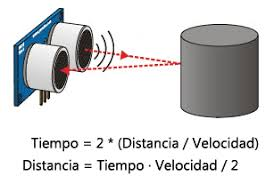

Ultrasonido
Los robots, como algunos animales, emiten señales de sonido o de luz y analizan la señal reflejada para determinar a qué distancia de un objeto se encuentran.
En este caso, este sensor emite un sonido a altas frecuencias y se calcula el tiempo que tarda en recibirse el eco. Como conocemos la velocidad del sonido (343m/s), podemos saber a qué distancia se encuentre el objeto.
